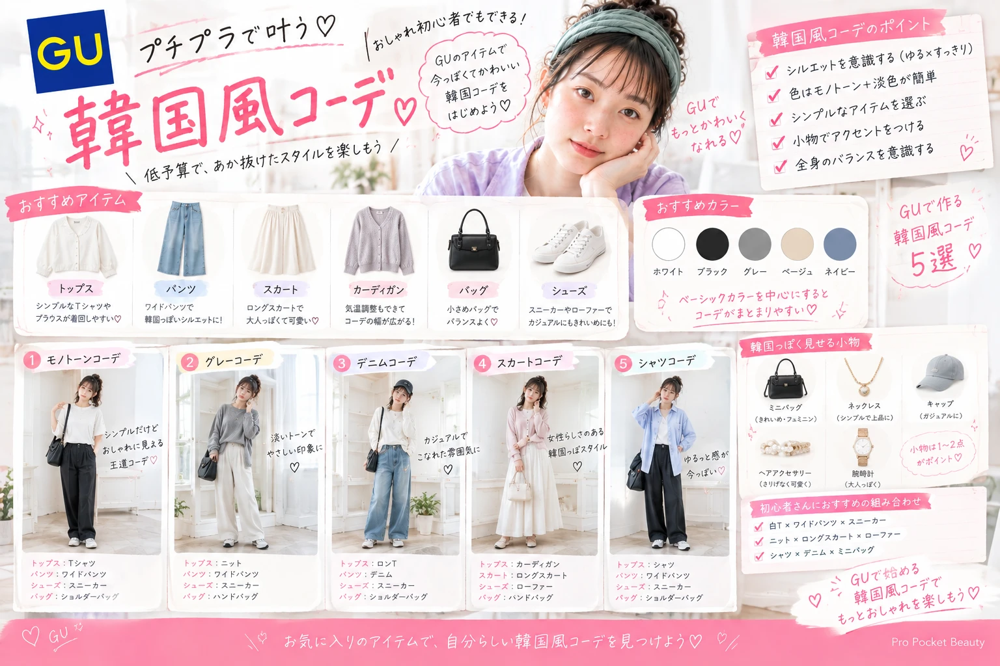

FASHION
GUで韓国風コーデ｜
プチプラで作る韓国ファッション初心者ガイド
GUのアイテムを使って、 少ない予算でも韓国っぽい雰囲気を楽しむ方法を紹介。 初心者でも取り入れやすい色・シルエット・小物の選び方を解説します。

GUで韓国っぽいコーデは作れる？
韓国ファッションに挑戦したいけれど、 できるだけお金をかけたくない。
そんな人におすすめなのが、 GUのベーシックアイテムを使った韓国風コーデ です。
韓国っぽく見せるポイントは、 高価な服を使うことではありません。 色・シルエット・小物を意識するだけでも、 いつものコーデを韓国風にアレンジできます。
韓国風コーデは「シルエット」が重要
韓国ファッションらしさを出したいなら、 まずシルエットを意識してみましょう。
初心者が取り入れやすい形
- ゆったりトップス
- ワイドパンツ
- ハイウエストボトム
- コンパクトなトップス
- ロングスカート
全身をピタッとさせるより、 「ゆるい部分」と「すっきりした部分」を作ると 今っぽい雰囲気に仕上がります。
色はモノトーン＋淡色が簡単
韓国風コーデ初心者なら、 色を増やしすぎないのがおすすめです。
| ベースカラー | 合わせやすい色 |
|---|---|
| ブラック | ホワイト・グレー |
| ホワイト | ブラック・ベージュ |
| グレー | ブラック・ホワイト |
| ベージュ | ブラウン・ホワイト |
| 淡いピンク | ホワイト・グレー |
基本は2〜3色程度にまとめると、 コーディネート全体がすっきり見えます。
GUで選びたいトップス
韓国風コーデのトップスは、 シンプルなデザインを選ぶと着回しやすくなります。
おすすめのタイプ
- 無地Tシャツ
- オーバーサイズシャツ
- コンパクトトップス
- カーディガン
- シンプルなニット
ロゴや装飾が多いものより、 無地やワンポイント程度のデザインから始めると コーディネートを組みやすくなります。
パンツはワイドシルエットが便利
韓国風のカジュアルコーデを作るなら、 ワイドパンツは特に使いやすいアイテムです。
合わせ方の基本
- ワイドパンツ＋コンパクトトップス
- ワイドパンツ＋短丈トップス
- ワイドパンツ＋オーバーサイズシャツ
ボリュームのあるパンツを履く場合は、 上半身をすっきりさせるとバランスを取りやすくなります。
スカートならロング丈がおすすめ
女性らしい韓国風コーデを作りたいなら、 ロングスカートも便利です。
簡単な組み合わせ
ロングスカート ＋ コンパクトトップス ＋ 小さめバッグ
足元にスニーカーを合わせればカジュアルに、 ローファーやブーツを合わせれば きれいめな印象にもできます。
バッグと靴で韓国っぽさをプラス
服を全部買い替えなくても、 バッグや靴を変えるだけで印象は大きく変わります。
| アイテム | 雰囲気 |
|---|---|
| ミニバッグ | きれいめ・フェミニン |
| ショルダーバッグ | カジュアル |
| スニーカー | 韓国カジュアル |
| ローファー | きれいめ |
| ブーツ | 大人っぽい |
GUで作る韓国風コーデ5選
① 王道モノトーンコーデ
白トップス＋黒パンツ＋黒バッグ＋スニーカー。 色をシンプルにまとめるだけで、 すっきりとした韓国風コーデになります。
② グレー系ワントーン
グレーのトップスに グレー系ボトムを合わせ、 白スニーカーをプラス。 淡い色を中心にすると柔らかい印象になります。
③ デニムカジュアル
デニム＋白トップス＋ ミニバッグ＋スニーカー。 シンプルなので普段使いしやすい組み合わせです。
④ ロングスカートコーデ
ロングスカート＋コンパクトトップス＋ ローファー。 女性らしさを残しながら、 きれいめな韓国風スタイルを作れます。
⑤ シャツを使った大人カジュアル
オーバーサイズシャツ＋ ワイドパンツ＋ 小さめバッグ。 シンプルでもシルエットでおしゃれに見せられます。
韓国風に見せる小物の使い方
コーディネートがシンプルなときは、 小物を1〜2点追加してみましょう。
- 小さめバッグ
- シンプルなネックレス
- キャップ
- ヘアアクセサリー
- シンプルな腕時計
小物を付けすぎるより、 主役を1つ決めるほうがまとまりやすくなります。
韓国風コーデで避けたい失敗
- 色を使いすぎる
- 全身をオーバーサイズにする
- 小物を付けすぎる
- 流行アイテムだけで固める
- サイズ感を確認せず購入する
特に初心者は、 「シンプル＋シルエット重視」 を意識すると失敗しにくくなります。
少ない予算なら全部買い替えなくてOK
韓国風コーデを始めるために、 ワードローブを全部買い替える必要はありません。
まず買うならこの3つ
- シンプルなトップス
- ワイドパンツ
- 小さめバッグ
すでに持っているスニーカーやアクセサリーと合わせれば、 少ない予算でも雰囲気を変えられます。
韓国風コーデ初心者チェックリスト
- □ 色を2〜3色にまとめた
- □ シルエットを意識した
- □ トップスとボトムのバランスを確認した
- □ バッグを小さめにした
- □ 靴との相性を確認した
- □ 小物を付けすぎていない
- □ 手持ち服と着回せる
GU×韓国コーデのよくある質問
Q. GUだけでも韓国風にできますか？
できます。 シンプルなアイテムを中心に、 色・シルエット・小物を意識すると 韓国風の雰囲気を作りやすくなります。
Q. 初心者は何色を選べばいい？
白・黒・グレー・ベージュなどの ベーシックカラーがおすすめです。
Q. 韓国風コーデは高くなりませんか？
すべてを買い替える必要はありません。 手持ちの服にトップスやバッグなどを 1〜2点追加するだけでも雰囲気を変えられます。
Q. 服のサイズはどう選べばいい？
普段のサイズだけで決めず、 商品のサイズ表を確認しましょう。 特にオーバーサイズの商品は、 着丈や身幅を確認することが大切です。
GUで韓国風ファッションを楽しもう
韓国風コーデは、 高価なブランド服を揃えなくても楽しめます。
初心者は、 「シンプルな色」 「きれいなシルエット」 「小物を1〜2点」 を意識するのがおすすめです。
GUのベーシックアイテムを上手に組み合わせれば、 少ない予算でも今っぽいファッションを楽しめます。
まずは手持ちの服を見直して、 できるところから韓国風コーデを始めてみましょう。
この記事が役立ったらシェアしてください